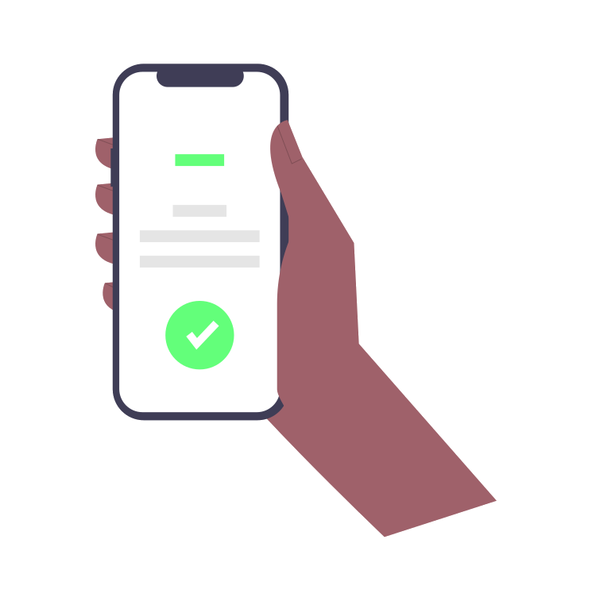

A plataforma Rever foi criada com o intuito de unir o cidadão e o poder público, para juntos, contribuirmos com a sociedade que pertencemos.
Sustentabilidade, orientações para os cidadãos, facilidades na tramitação de documentos. ajuda na mobilidade urbana e conscientização ambiental são alguns pontos que o Rever procura melhorar. por meio do seu aplicativo, que você obtém no próprio celular.

Serviços Digitais para o cidadão

Fiscal Mobile

Redução de Papel

Núcleo do Bem-estar Animal

Solicitações

Ferramenta Personalizável

Denúncias
Gestão informatizada dos reciclados


Cidades que impulsionam com o Rever
Criciúma

Nova Veneza

Braço do Norte

Içara

Morro da Fumaça